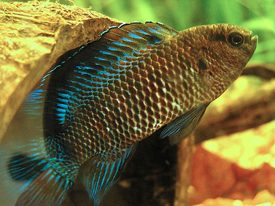

बादिसBadis
Badis badis · Badidae · FSH-0080

- Scientific name वैज्ञानिक नाम
- Badis badis (Hamilton, 1822)
- Family कुल
- Badidae
- Hindi हिंदी
- बादिस
- Local names स्थानीय नाम
- badis, badis badis, dwarf chameleon fish, neeli baam
- Status here यहाँ की स्थिति
- native
- Movement आवागमन
- Resident, here all year
- Known from कहाँ दर्ज
- Others have published records from the wider Awadh–Purvanchal plain, none yet from Basti–Ayodhya अवध–पूर्वांचल से दूसरों के प्रकाशित अभिलेख, बस्ती–अयोध्या से अभी नहीं
- IUCN IUCN
- not evaluated
- Review समीक्षा
- not yet reviewed
When to look कब देखें
Present all year. साल भर मौजूद।
Uses and possibilities उपयोग और संभावनाएँ
Drawn from the documented uses in the profile below, where each is labelled traditional, current or a research lead. All uses →
Tell it apart from इनसे अलग पहचानें
बादिस / Badis
Badis badis (Hamilton, 1822) — Badidae
बादिस — अवध के उथले तालाबों और जलकुंभी से भरी धाराओं में पाई जाने वाली एक छोटी, गिरगिट की तरह रंग बदलने वाली शिकारी मछली, जिसके मूंछें नहीं होतीं और नर अंडों की गुफा में रखवाली करता है।
Quick Identification त्वरित पहचान
| Feature | Description |
|---|---|
| Body shape | Small, laterally compressed, elongated oval body with rounded snout |
| Barbels | Completely absent; no sensory barbels around the protractile mouth |
| Dorsal fin | Long, continuous dorsal fin supported by 16 to 18 strong spines |
| Color changes | Rapid chameleon-like physiological color shifts from brown to deep blue-black |
| Nesting habits | Cave spawner; male aggressively defends adhesive eggs inside small crevices |
Small, laterally compressed percoid fish known for remarkable chameleon-like color changes and an absolute absence of barbels. The dorsal fin is continuous and dominated by numerous spines. Breeding males turn deep iridescent blue-black with metallic blue highlights, whereas resting individuals appear mottled brownish-grey.
हिंदी: छोटी, चपटी और गिरगिट की तरह रंग बदलने वाली मछली। इसके मुंह पर कोई मूंछ (बार्बल) नहीं होती। पीठ पर लंबा कांटेदार पंख होता है। नर मछली अंडों की गुफा में रखवाली करती है।
Morphology शारीरिक संरचना
| Feature | Description | Source |
|---|---|---|
| Total length (maximum) | 7.1 cm TL | Froese & Pauly (2025), FishBase |
| Barbels | Completely absent; mouth small and protractile | Day (1889) |
| Dorsal fin formula | Continuous fin with 16 to 18 spines and 7 to 10 soft rays | Day (1889) |
| Lateral line scales | 26 to 33 scales along the lateral line | Day (1889) |
The body is oblong, moderately elongated, and laterally compressed. The head is relatively small with a rounded snout; the mouth is small, protractile, and directed slightly obliquely upwards, with the lower jaw projecting slightly. Barbels are completely absent around the mouth. The eyes are large and mobile, allowing stereoscopic tracking of prey. The continuous dorsal fin originates above the pectoral base and bears 16 to 18 rigid spines followed by 7 to 10 soft rays (Talwar & Jhingran 1991). The anal fin possesses 3 spines and 6 to 8 soft rays (Day 1889). The caudal fin is rounded. Scales are ctenoid, numbering 26 to 33 in a longitudinal series, while the lateral line is interrupted or absent (Jayaram 2010). Coloration is extraordinarily variable: resting specimens display a mottled olive-brown background with irregular dark transverse bars and spots, but courting males darken rapidly to an intense velvety indigo-black with gleaming turquoise iridescence on the fins.
हिंदी: FishBase (Froese & Pauly 2025) के अनुसार अधिकतम कुल लंबाई 7.1 सेमी होती है। मुंह पर कोई मूंछ नहीं होती (Day 1889)। नर का रंग गहरा नीला हो जाता है।
Behaviour & Ecology व्यवहार एवं पारिस्थितिकी
A cryptic, solitary micropredator specialized for navigating dense aquatic weed beds in still or sluggish waters. It hovers almost motionless among submerged plant stems, using precise undulating movements of its pectoral fins to orient itself. When hunting, it stalks prey with cat-like stealth, aligning both eyes before lunging with a sudden protraction of its jaws. It displays strong territoriality; males vigorously defend small cave structures, clay crevices, or submerged coconut shells against conspecific rivals.
हिंदी: यह जलीय पौधों के घने जंगलों में छिपी रहने वाली शांत शिकारी मछली है। यह पानी में तैरते कीड़ों और लार्वा को बड़ी एकाग्रता से देखती है और अचानक झपटकर पकड़ लेती है। नर अपनी सीमा की रक्षा करता है।
Life Cycle / Phenology जीवन चक्र एवं फेनोलॉजी
Reproduction takes place during the monsoon months from July to September in shallow vegetated waters (Talwar & Jhingran 1991). The male establishes a territory centred on a small dark crevice, hollow stone, or submerged leaf cavity. When a ripe female approaches, the male displays vivid velvety blue coloration and courts her into the cavity through elaborate fin flaring. The female deposits adhesive eggs on the ceiling or inner walls of the cavity (Day 1889). Immediately after fertilization, the male drives the female away and assumes sole parental care, fanning the clutch continuously with his pectoral fins to provide oxygen and protect them from fungal growth until they hatch.
हिंदी: प्रजनन मानसून के महीनों में जुलाई से सितंबर के दौरान होता है (Talwar & Jhingran 1991)। नर किसी छोटी गुफा या दरार में घोंसला बनाता है। मादा वहां अंडे चिपकाती है (Day 1889)। इसके बाद नर अंडों की लगातार पंखा झलकर रखवाली करता है।
Host Plants or Prey आहार एवं शिकार
Specialized carnivorous micropredator feeding exclusively on living animal prey. Its natural diet consists of mosquito larvae and pupae (Culex, Anopheles), small chironomid midges, water fleas (Daphnia, Moina), copepods, tiny ostracods, and small aquatic worms (Tubifex). It plays a valuable ecological role in suppressing vector mosquito populations in shallow wetlands.
हिंदी: यह पूरी तरह से मांसाहारी है और जीवित शिकार खाती है। यह मच्छरों के लार्वा, पानी के पिस्सू (डैफ़निया), छोटे कीड़े और जलीय केंचुए खाती है। यह मच्छरों की रोकथाम में बहुत मददगार है।
Predators / Natural Enemies प्राकृतिक शत्रु एवं शिकारी
Due to its small size and slow swimming speed, it is preyed upon by larger freshwater fishes including snakeheads (Channa punctata), climbing perch (Anabas testudineus), and spiny eels (Macrognathus pancalus). Checkered keelback water snakes (Fowlea piscator) and wading birds such as the Indian Pond Heron (Ardeola grayii) actively hunt it in shallow vegetated margins.
हिंदी: छोटे आकार के कारण इसे सौल, कवाई और बाम जैसी बड़ी मछलियां खा जाती हैं। साथ ही पानी के सांप (ढोंड) और बगुले उथले किनारों पर इसका शिकार करते हैं।
Agricultural / Human Relevance कृषि एवं मानव उपयोगिता
Although too small to serve as a food fish, Badis badis has immense ecological value as a natural bio-control agent against disease-carrying mosquito larvae in rice paddies and village ponds. Furthermore, its brilliant blue nuptial coloration and fascinating cave-breeding behaviour have made it a prized ornamental fish in international and domestic aquarium trades.
हिंदी: यह खाने के लिए बहुत छोटी है, लेकिन यह तालाबों में मच्छरों के लार्वा खाकर मलेरिया और डेंगू की रोकथाम में बहुत मदद करती है। रंग बदलने के कारण इसे एक्वेरियम में भी बहुत पसंद किया जाता है।
Expected Locally क्षेत्रीय संभावना
Not a field record. Written from published accounts for eastern Uttar Pradesh. No confirmed local sighting yet — if you have seen it, that is what the atlas needs.
अभी तक स्थानीय पुष्टि नहीं। यह विवरण प्रकाशित स्रोतों से है, किसी अवलोकन से नहीं।
GBIF holds published records across the Gangetic basin in northern and eastern India. It is expected in perennial oxbow lakes, weed-choked ponds, and slow drains across Ayodhya, Gonda, and Basti districts. A confirmed record requires an in-focus photograph showing dorsal spine structure, absence of barbels, and flank coloration with precise wetland coordinates.
हिंदी: यह अवध के खरपतवार वाले तालाबों और शांत नालों में संभावित है। पुष्टि के लिए बिना मूंछ वाले मुंह, कांटेदार पीठ पंख और शरीर के रंग को दर्शाती स्पष्ट तस्वीर चाहिए।
Distribution वितरण
Widely distributed across northern India, Pakistan, Bangladesh, Nepal, and Bhutan throughout the Ganges, Brahmaputra, and Mahanadi river basins. Within Uttar Pradesh, it occurs in slow-flowing vegetated wetlands and floodplain swamps.
हिंदी: यह भारत, पाकिस्तान, बांग्लादेश, नेपाल और भूटान की गंगा और ब्रह्मपुत्र नदी प्रणालियों में फैली हुई है। उत्तर प्रदेश में यह वनस्पति से भरे तालाबों और दलदलों में पाई जाती है।
Research Questions शोध प्रश्न
- What are the specific thermal and photoperiod cues triggering nuptial coloration and cave spawning in Badis badis?
- To what degree does Badis badis reduce Anopheles larval survival in vegetated irrigation ditches compared to other small fishes?
- How do modern chemical pesticides applied to adjacent paddy fields affect egg development and parental fanning behaviour?
- What microhabitat features determine cave site selection by territorial males in natural floodplain oxbows?
- क्या अवध के धान के खेतों में बादिस मछली मच्छरों की संख्या को प्राकृतिक रूप से नियंत्रित कर सकती है?
- क्या रासायनिक कीटनाशकों के बहाव से नर मछली द्वारा अंडों की रखवाली करने के व्यवहार पर असर पड़ता है?
Similar Species समान प्रजातियाँ
| Similar species | Distinction | Hindi distinction | |
|---|---|---|---|
| Dwarf Gourami \ | Trichogaster lalius | Possesses elongate, thread-like pelvic fin feelers; deeper oval body; labyrinth organ present | ड्वार्फ गौरमी के पास धागे जैसे लंबे श्रोणि पंख होते हैं और उसका शरीर अधिक गहरा व चपटा होता है |
| Honey Gourami \ | Trichogaster chuna | Features modified filiform pelvic fins; breeding males develop rich honey-orange body and blue throat | हनी गौरमी में धागे जैसे पंख होते हैं और नर का रंग गहरा शहद जैसा नारंगी व गला नीला होता है |
| Indian Glassy Fish \ | Parambassis ranga | Completely transparent body revealing backbone and swim bladder; divided dorsal fins | इंडियन ग्लासी फिश का शरीर पूरी तरह पारदर्शी होता है और उसकी पीठ पर दो अलग-अलग पंख होते हैं |
Field rule: Small percoid fish without barbels, having a continuous spiny dorsal fin and dynamic blue-to-brown color changes.
हिंदी: बिना मूंछों वाली छोटी मछली, जिसकी पीठ पर लंबा कांटेदार पंख होता है और जो गिरगिट की तरह रंग बदलती है।
Taxonomy & Classification वर्गिकी एवं वर्गीकरण
Original description. Hamilton (1822), An Account of the Fishes Found in the River Ganges and Its Branches, p. 70; type locality: Gangetic provinces, India.
Subspecies. Monotypic species; related forms previously treated as varieties have been elevated to distinct species in the genus Badis.
Family and order placement. Placed in the family Badidae, order Perciformes, class Actinopterygii.
IUCN status rationale. Not evaluated by the IUCN Red List; widely distributed and common across northern Indian wetland habitats.
हिंदी: फ्रांसिस हैमिल्टन ने 1822 में इसका पहला वैज्ञानिक विवरण दिया था। यह बेडिडे कुल और पर्सिफॉर्मीस गण की सदस्य है।
Photo Gallery फोटो गैलरी
No photos yet — add field photos to media/species/badis/ and run node scripts/sync_photos.js.
Photos needed आवश्यक फोटो
- [ ] Lateral view of territorial male showing deep velvety indigo nuptial coloration (गहरे नीले रंग में सजधज कर तैयार वयस्क नर का पार्श्व दृश्य)
- [ ] Mottled cryptic female or resting male among submerged aquatic vegetation (जलीय पौधों के बीच छिपी हुई चितकबरी मादा या नर का दृश्य)
- [ ] Detailed close-up of head highlighting absence of barbels and protractile mouth (बिना मूंछ वाले मुंह और बड़ी आंखों का क्लोज-अप दृश्य)
- [ ] Continuous dorsal fin displayed with spines and soft rays erect (पूरी तरह फैले हुए कांटेदार पृष्ठीय पंख का स्पष्ट दृश्य)
- [ ] Male guarding entrance of natural cave or hollow debris cavity in water (पानी में किसी खोखली गुफा या दरार के बाहर पहरा देते नर का दृश्य)
- [ ] Typical weed-choked pond or slow oxbow marsh habitat in eastern Uttar Pradesh (पूर्वी उत्तर प्रदेश के खरपतवार से भरे तालाब का प्राकृतिक वास दृश्य)
References संदर्भ
- Original description: Hamilton, 1822 — see GBIF.
- Day, F. (1889). The Fauna of British India, Including Ceylon and Burma: Fishes. Vols. 1–2. Taylor & Francis, London.
- Talwar, P. K. & Jhingran, A. G. (1991). Inland Fishes of India and Adjacent Countries. Vols. 1–2. Oxford & IBH Publishing Co., New Delhi.
- Jayaram, K. C. (2010). The Freshwater Fishes of the Indian Region. Narendra Publishing House, Delhi.
- Froese, R. & Pauly, D. (Eds.) (2025). FishBase. World Wide Web electronic publication.
- GBIF Occurrence Data — Badis badis, India (2025).
Source file: species/fauna/fish/badis.md